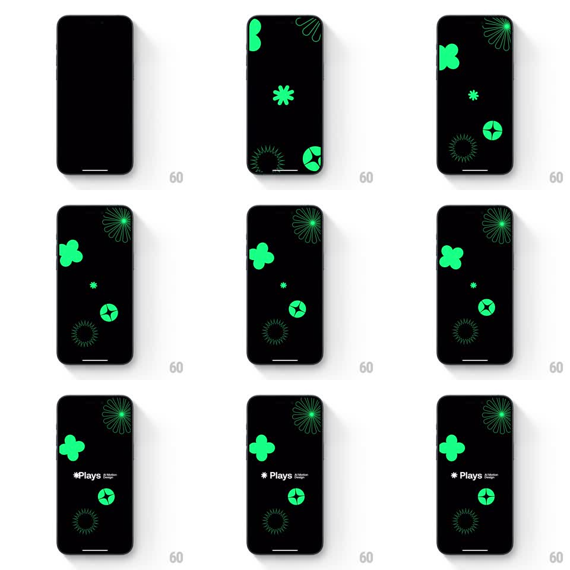

Media
Frame-by-frame

Rebuild this animation 1:1: the Plays splash - neon green geometric shapes spin and drift across a black field before the "Plays - A Motion Design Playground" wordmark fades in.

Rebuild this animation 1:1: the Plays splash - neon green geometric shapes spin and drift across a black field before the "Plays - A Motion Design Playground" wordmark fades in. ## Integration Integration: stack-agnostic spec - springs given as stiffness/damping, timed motions as duration + curve; map every value to your framework and animation library of choice. ## Scene Black screen. Neon green shapes scattered across the field: an asterisk, a clover/flower, spiral ring bursts, a four-point spark in a circle - mixing solid fills and line-drawn versions. End state adds the wordmark bottom-left: an asterisk glyph, "Plays" in bold, and "A Motion Design Playground" in small type. ## Motion spec Pattern: ambient spinning shape field with wordmark reveal. - From black, shapes fade in one by one (150ms each, random order) at their fixed positions. - Each shape spins continuously at its own rate and direction (solid shapes ~6s per revolution, line-drawn spirals ~10s, alternating clockwise/counterclockwise, linear). - Solid shapes also pulse gently (scale 1.0 to 1.08, 2s sine, phases offset). - At ~1.2s the wordmark block fades up bottom-left (translateY 12px to 0, 400ms). - The field holds - spinning continues behind the wordmark indefinitely. ## Calibration - Each shape owns a distinct spin speed; synced rotation reads as a single rigid image. - Keep shapes static in position - the motion is rotation and pulse only, no drifting. ## Reduced motion Static field with wordmark; no rotation or pulse. ## Don't miss - Only one green: pure neon on true black, no gradients or secondary colors. - The asterisk in the wordmark matches the asterisk shape in the field - same glyph, same green.